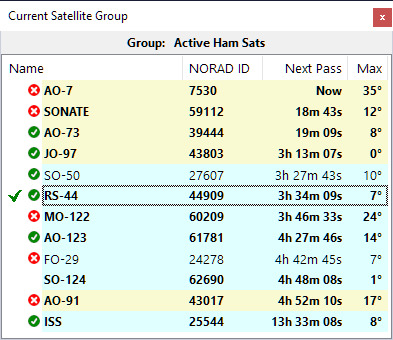

Download
Current Version
Previous Versions
See All Releases
Release Notes
v.1.23
- the DUAL_WATCH command is no longer sent to rigctld.exe;
- improved error handling for antenna rotator.
v.1.22 FINAL RELEASE
- implemented the Smart Antenna Rotation algorithm;
- satellite pass details added to the mouse tooltip;
- satellites without transmitters removed from the dataset;
- fixed ADIF generation error.
v.1.21 RC
- many improvements in the CAT control;
- improved integration with SkyCAT;
- STATION_CALLSIGN and GRIDSQUARE added to ADIF output;
- the Alt key increases the mouse-wheel tuning speed.
v.1.20 Beta
- improved error handling;
- fixed minor errors.
v.1.19 Beta
- fixed a number of glitches in the CAT control.
v.1.18 Beta
- fixed the Transmit button;
- improved stability of CAT control;
- added a drop-down menu to Rotator on the status bar.
v.1.17 Beta
- FM_D mode added for external decoders;
- documentation updated.
v.1.16 Beta
- Added support of PlutoSDR;
- added Notes to the QSO Entry panel;
- documentation updated.
v.1.15 Beta
- Adif folder creation fixed.
v.1.14 Beta
- QSO Entry panel added;
- Output Stream settings are now applied correctly;
- documentation updated.
v.1.13 Beta
- added I/Q and audio streaming via UDP;
- added satellite position announcement.
v.1.12 Beta
- fixed the error caused by the decayed satellites;
- installer is signed with an Open Source SignPath certificate.
v.1.11 Beta
- added support of HackRF SDR and AirspyHF+;
- reduced toolbar width to fit smaller screens;
- added vertical scale to the Timeline panel;
- fixed null pointer error;
- added more sdr-related logging;
- updated documentation.
v.1.10 Beta
- experimental version for debugging SDR interface.
v.1.9 Beta
- added command to reset window layout;
- missing DLL files added to the installer.
v.1.8 Beta
- added support of RSP1b and RSPdx-R2 SDR;
- improved error handling and logging.
v.1.7 Beta
added a real-time satellite status indicator to the Current Group panel. Must be enabled in Settings.

v.1.6 Beta
- added support of remote SDR;
- added automatic checking for software updates;
- the user is no longer required to enter a Ham callsign;
- re-entered satellites are now removed from the groups to prevent errors.
v.1.5 Beta
- added command to load TLE from file;
- added support of RTL-SDR Blog V.4;
- improved handling of non-standard text size.
v.1.4 Beta
- added support of azimuth-only rotators;
- fixed overlapped text on the monitors with non-standard text size;
- the waterfall may now work on the low end video cards, with lower spectrum resolution.
v.1.3 Beta
- fixed Null Pointer errors;
- fixed the decimal comma vs. decimal point issue.
v.1.2 Beta
- waterfall display is now less demanding to the video card capabilities;
- improved logging.
v.1.1 Beta
- missing DLL's added to the installer.
v.1.0 Beta
- the first public release.